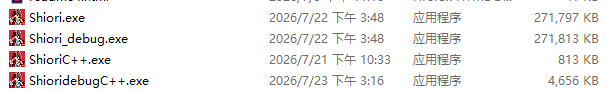
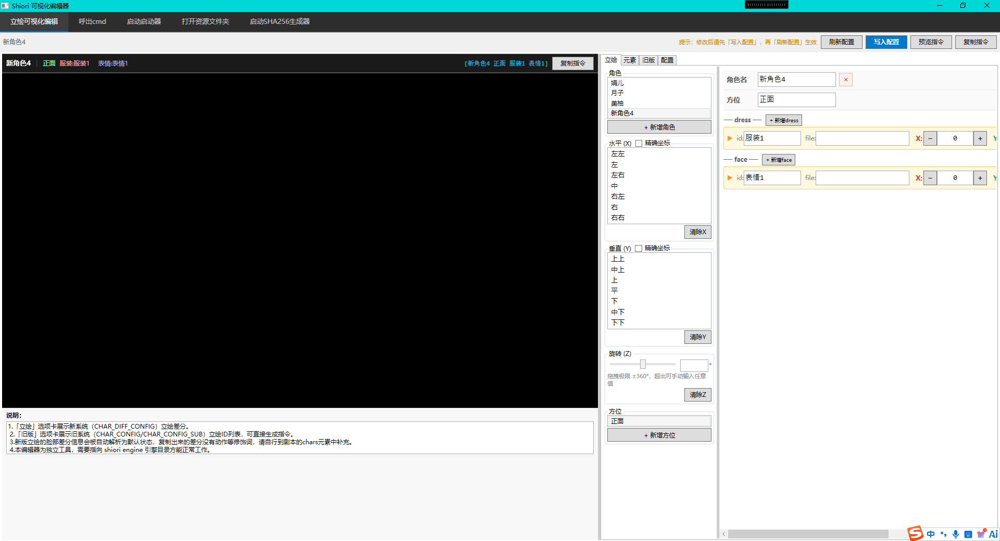
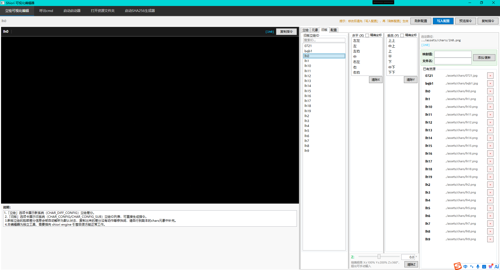

target: "#" 时，不再进行跳转，直接执行选项之后的下一行剧情。适用于「站在原地」「不做任何事」等不改变流程的选项target: "标签名" 时，引擎会在当前 story 数组中查找 command: "[标签名]" 所在行，并从该行的下一行继续执行。适用于分支剧情的选择后汇合"scene2.html"），现已扩展为三种跳转方式："xxx.html"（页面跳转）、"标签名"（本文件内跳转）、"#"（不跳转）[30%]、[-20%]），与旧版简单立绘保持一致retreat、「前进」/forward、「吓一跳」/scare 在新版立绘中现已完整支持注意：如果需要使用到可视化编辑器时，需要将引擎核心版本更新至V2.1.7或更新，否则一些功能将无法正常使用
注：在本版本发布的engine.js中有一些可视化编辑器需要用到的立绘相关代码，与引擎核心不冲突，因此可以放心使用

如图所示，ShioriC++.exe/ShioridebugC++.exe是正在研发中的c++版本启动器，体积大小已经在图片中展示。此版本为正在开发中的版本，具体体积大小还未确定，请以发布为准。


如图所示，立绘部分被暂时删除，因版权问题不适用被公开展示，目前已经将立绘可视化部分完全迁移并适配。以及在启动器中未实装的旧版立绘可视化在此处可以正常使用。
scene 开头的限制saves.html、archive.html 中的硬编码，现在改变为可选项，现在引擎将会识别剧本文件的 <title> 属性来命名flowchart.html 和 flowchart_debug.html 中的 displayName 元素也变为可选项，默认会识别剧本文件的 <title> 属性来命名game_info.json 文件，以方便管理器识别游戏信息[s] 标签被错误渲染的问题详细的标签系统说明及完整示例请查阅 wait.html。
基础语法[wait time= ${number}]，其中 ${number} 是正整数，表示毫秒（1秒 = 1000毫秒）。
bg1,[wait time=1000]bg2,[wait time=2000]bg3[wait time=2000]bgm1）和淡出停止（bgm stop[wait time=2000]）archive.html）
saves.html）flowchart.html）story.html）archive.html 中存档保存功能的严重错误story.html 中添加返回当前页面按钮，点击可直接返回当前游玩场景middle/flat 来表示y轴居中了saves.html 的CSS代码，移除冗余样式规则，提升代码可维护性archive.html 保持一致，提供统一的用户体验z: 指令：支持立绘绕几何中心进行Z轴旋转z:<数值>，无需百分比符号，数值直接代表角度（度）chars: "[中 z:10 lh01]" 顺时针旋转10度；chars: "[中 z:-45 lh01]" 逆时针旋转45度ltilt，立绘逆时针旋转90度，动画时长约0.5秒rtilt，立绘顺时针旋转90度，动画时长约0.5秒stand，重置旋转角度到0°，动画时长约0.3秒proud，执行一次完整摇摆序列后自动停止，总时长约2.4秒cproud，进入循环摇摆状态直到被明确停止sproud，立即停止持续得意动画，平滑回归基准状态z: 角度基础上进行±5度的摇摆，不会覆盖原有旋转bright，恢复立绘亮度至100%dim 或 dark，降低立绘亮度至50%audio 属性中剥离，新增独立的 se 属性支持se 和 voice 可以同时在同一剧情行中触发，互不干扰assets/se/ 目录，引擎会根据文件名自动拼接路径并播放{ text: "点击声效", se: "click" } 自动加载 assets/se/click.ogg 或 .mp3audio 和 video 属性中直接使用文件名（如 voice1, video1）assets/audio/ 和 assets/video/ 目录下查找对应文件，不再需要手动定义映射路径[汉字,拼音] 语法为文本添加注音标注[日语,假名]），适用于所有HTML支持的语言"[normal],[pov 主角],[lock]"nod 关键词，执行一次完整的上移→下移→回归原位序列+/↑ 增加音量，-/↓ 减少音量[标识符 修饰词 资源ID]，标识符必须紧挨着左方括号 [[角色A 左 lh3], [角色A lh4], [消失 角色A]fadeIn 和「渐出」/ fadeOut 指令，支持立绘以平滑的淡入淡出效果出现或消失[渐出 lh1]），避免添加位置修饰词导致先闪动再消失trans bg_01、左滑 bg_02、scanR bg_03, 分隔的多状态帧指令，实现立绘的顺序动画与中断跳转[左,中,右 lh01]（依次经过左侧、中间、右侧）instant 实现无过渡动画的状态切换instant 会被自动忽略x:（水平）和 y:（垂直）illustration.md 文档bg_config.js 文件统一管理背景图片资源engine.js 的注释内容，提升代码可读性和维护性[novel] 和 [normal] 标签的显示问题（全屏小说模式）saves.html 大致相同，但所有剧本内容将不调用API直接显示，可用于番外小剧场使用pov 指令时，bgm无法播放的问题command 指令应当单独占用一个故事行对象pov 标签，支持叙事视角显示功能command: "[pov 角色名]" 或 command: "[pov stop]"bgm wait 标签，支持 BGM 淡出切换功能[a] 音频同步标签，支持多段音频与文本片段同步播放